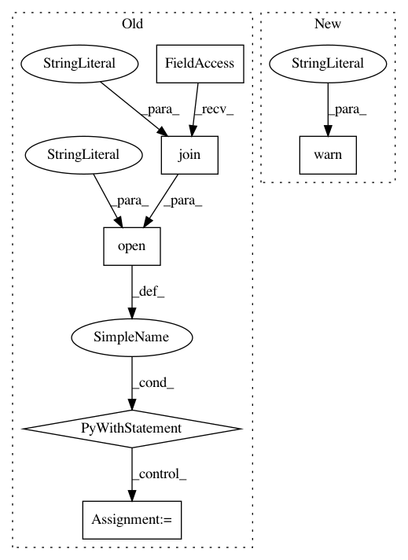

b56a4b355dfc302fa449d223e065af3a7acac986,snorkel/learning/pytorch/noise_aware_model.py,TorchNoiseAwareModel,save,#TorchNoiseAwareModel#Any#Any#Any#Any#,225
Before Change
saver = tf.train.Saver(tf.global_variables())
// Save model kwargs needed to rebuild model
with open(os.path.join(model_dir, "model_kwargs.pkl"), "wb") as f:
dump(self.model_kwargs, f)
// Save graph and report if verbose
saver.save(
self.session,
os.path.join(model_dir, model_name),
global_step=global_step
After Change
if not os.path.exists(model_dir):
os.makedirs(model_dir)
warnings.warn("Unstable! Please extensively test this part of the code when time permits")
// implement Path here
print(model_dir)
torch.save(
self.state_dict(),
In pattern: SUPERPATTERN
Frequency: 4
Non-data size: 6
Instances
Project Name: snorkel-team/snorkel
Commit Name: b56a4b355dfc302fa449d223e065af3a7acac986
Time: 2018-05-03
Author: dnicholson329@gmail.com
File Name: snorkel/learning/pytorch/noise_aware_model.py
Class Name: TorchNoiseAwareModel
Method Name: save
Project Name: biolab/orange3
Commit Name: 7b17d670d0c9511b742e72e42f4f12ed0cb652bf
Time: 2018-04-26
Author: ales.erjavec@fri.uni-lj.si
File Name: Orange/canvas/config.py
Class Name:
Method Name: save_config
Project Name: snorkel-team/snorkel
Commit Name: b56a4b355dfc302fa449d223e065af3a7acac986
Time: 2018-05-03
Author: dnicholson329@gmail.com
File Name: snorkel/learning/pytorch/noise_aware_model.py
Class Name: TorchNoiseAwareModel
Method Name: load
Project Name: biolab/orange3
Commit Name: 7b17d670d0c9511b742e72e42f4f12ed0cb652bf
Time: 2018-04-26
Author: ales.erjavec@fri.uni-lj.si
File Name: Orange/canvas/config.py
Class Name:
Method Name: open_config